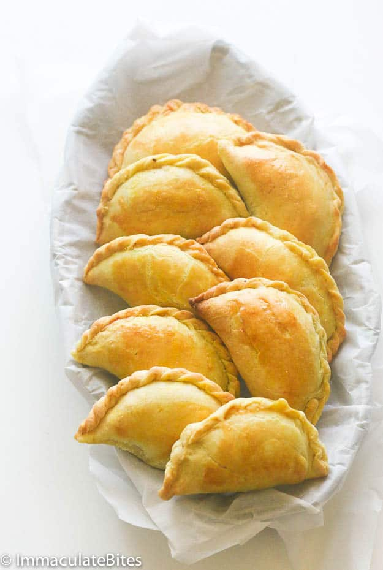
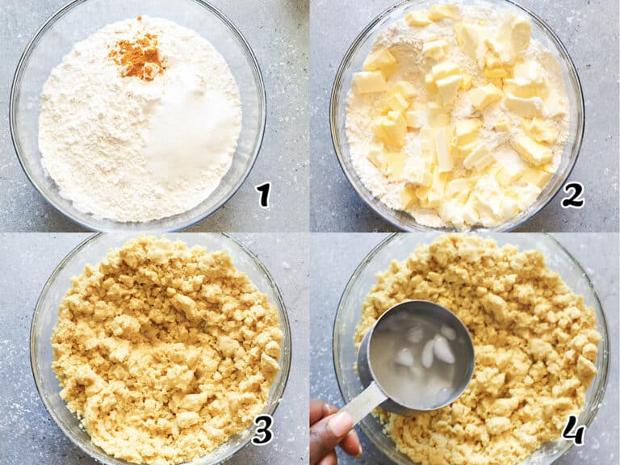
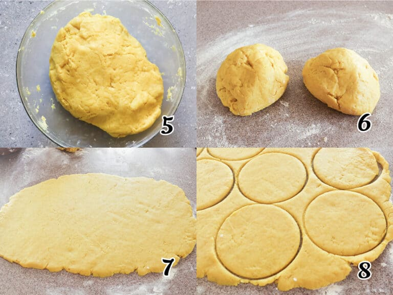

Jamaican Beef Patties

What are Jamaican Beef Patties
Jamaican meat patties are distinctive from others, like
this African meat pie, because they boast a yellowish
color from tasty turmeric and creamy butter. The beef
filling is heavily spiced with cumin, garlic, onions,
hot pepper, allspice, thyme, paprika, and curry,
differentiating itself from the rest.
The beef filling is Immaculately spiced. If you can
tolerate the heat, then by all means, add some to the
filling. I added ½ a teaspoon of chili pepper to make
it spicy but not overly hot.
Recipe Ingredients:
Pie Crust
Pie Crust
- Flour – All-purpose flour is the key element for the crust.
- Flavoring – Salt, sugar, and turmeric (with its almost gingery taste)
enhance the flavor and give your patties a gorgeous yellow color.
- Fat – Super cold shortening and butter (frozen is even better)
creates a melt-in-your-mouth texture.
- Liquids – Ice-cold water and vinegar keeps the dough tender
for an airy texture, moist crumb, and incredible flavor.
Beef Filling
- Ground Beef – The star ingredient for the meat pie filling.
But you can use ground pork or chicken for a switch out.
- Seasoning – Curry, onion, garlic, paprika, allspice, dried
thyme, white pepper, chili powder, parsley, and green onion
spice the meat up. Scotch bonnet pepper is optional for that
beautiful heat.
- Chicken Bouillon Powder – For additional meat essence
and rich umami flavor.
- Bread Crumbs – This ingredient acts as a binder and keeps
the meat from packing together in a hard lump. Yes, you
can use gluten-free bread crumbs if you prefer.
How to Make Jamaican Beef Patties
Make the Crust
- Combine – Mix flour, salt, sugar, and turmeric in a food
processor or by hand, and blend well. Add the butter, and
shortening, followed by vinegar and water in small amounts,
pulse until combined, and the dough holds together in a ball
(Photos 1-4).

- Roll – Place the dough on a well-floured surface. Divide it
evenly into two parts and roll them out (Photos 5-6).
- Shape – Using a large-mouth glass or bowl, about 4-5″, cut out
circles by gently pressing the dough and releasing it, shaping
the meat patty dough. Continue cutting out circles until they’ve
all been cut (Photos 7-8).
- Chill – Refrigerate for at least 30 minutes or until ready to
use.
